Network Engineering · RF Planning
Wireless Link Planning & RF Engineering
Historical Atma–Al-Sharq two-hop wireless backhaul with seven-zone distribution and VB.NET engineering tools. The RF calculations shown are a subsequent review, not commissioning measurements.
Historical implementation · Subsequent RF reviewHistorical implementation; the RF calculations shown are a subsequent engineering review, not commissioning measurements.

Overview
Implementation scope
A wireless link is only as good as its weakest planning assumption. This engineering case treats coverage, path geometry and radio budget as one engineering workflow: where service is needed, whether the path between sites stays clear, and whether the receiver is left with usable margin. The implemented network brings internet from Atma to Al-Sharq in Dhamar Governorate through a mountain-top relay, planned on Ubiquiti equipment and supported by two VB.NET engineering calculators for Fresnel-zone clearance and RF link budget.
The three parts were originally documented separately. They are presented together here because a real link decision needs all of them: a good link budget cannot rescue an obstructed path, and a clear path does not prove there is enough signal at the receiver. Each part below states its inputs, its method and the evidence a reviewer should expect to inspect.
Planning workflow
Each question is answered with its own method, then recorded in a single link decision record. Prediction and measurement are kept apart throughout: a model result is never presented as a field measurement.
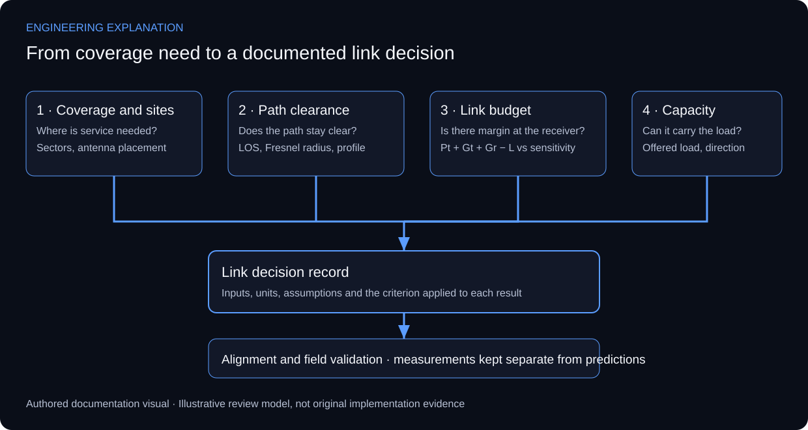
| Stage | Question | Method and tool | Evidence to inspect |
|---|---|---|---|
| 1 · Coverage | Where can clients keep the required radio service? | Coverage modelling and site planning on Ubiquiti equipment | Radio and geometry assumptions attached to each coverage view |
| 2 · Path clearance | Does the point-to-point path stay clear of obstructions? | Line-of-sight and Fresnel-zone planning tool (VB.NET) | Terrain profile, obstacle heights and the clearance criterion applied |
| 3 · Link budget | Is there enough margin at the receiver? | RF link-budget and propagation engine (VB.NET) | Input units, propagation model, margin against sensitivity |
| 4 · Capacity | Can the link carry the offered traffic? | Separate review of radio rate and payload throughput | Direction, offered load and test duration |
1 · Coverage and point-to-point site planning
Wireless coverage and point-to-point connectivity were modelled together, considering antenna alignment, capacity requirements and site coverage. Coverage describes where access is available; point-to-point planning describes the transport between sites. Antenna placement and alignment influence both the proposed link and its installation.
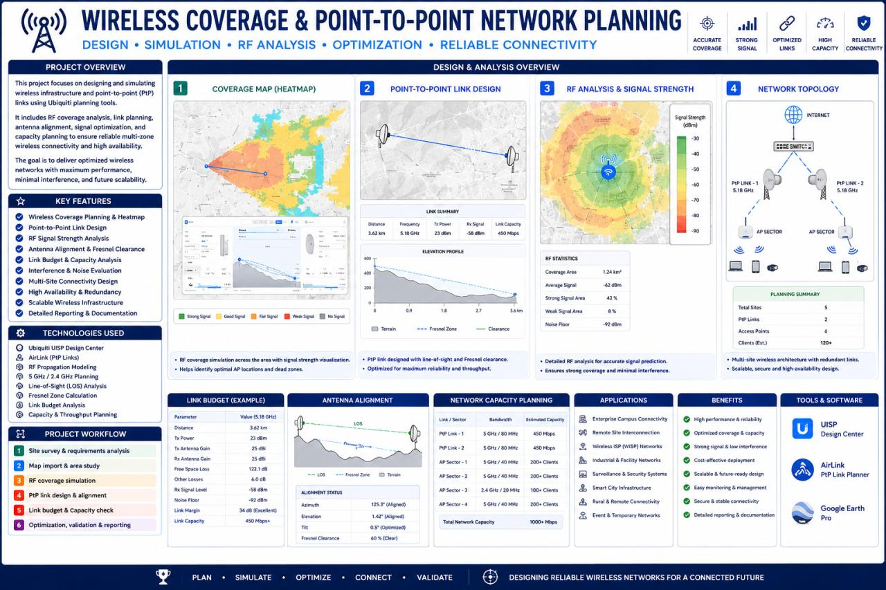
Coverage asks where a client can maintain the required radio service. Backhaul asks whether the path between fixed endpoints has adequate propagation and clearance. Capacity asks whether the radio and network can deliver the required traffic under the defined load. Treating these as separate review paths keeps a nominally covered area from being presented as guaranteed throughput.
A planning record needs the radio settings, antenna pattern, installation geometry and environmental assumptions associated with its prediction. Alignment should be reviewed against the intended endpoint and polarisation before optimising observed signal. No frequencies or sector counts are reconstructed from the low-resolution preview.

| Review area | Method | Evidence to inspect |
|---|---|---|
| Coverage prediction | State radio and geometry assumptions | Model context attached to its coverage view |
| Path alignment | Check endpoint direction and polarisation | Alignment record linked to link quality |
| Capacity | Separate negotiated rate from payload throughput | Direction, load and test duration recorded |
| Field review | Associate observations with locations and conditions | Measured points separated from predictions |
2 · Line of sight and Fresnel-zone clearance
A point-to-point link needs more than a visible sight line. The planning tool addresses line-of-sight and Fresnel-zone clearance: the link budget evaluates power, while the path profile evaluates geometry and obstruction.
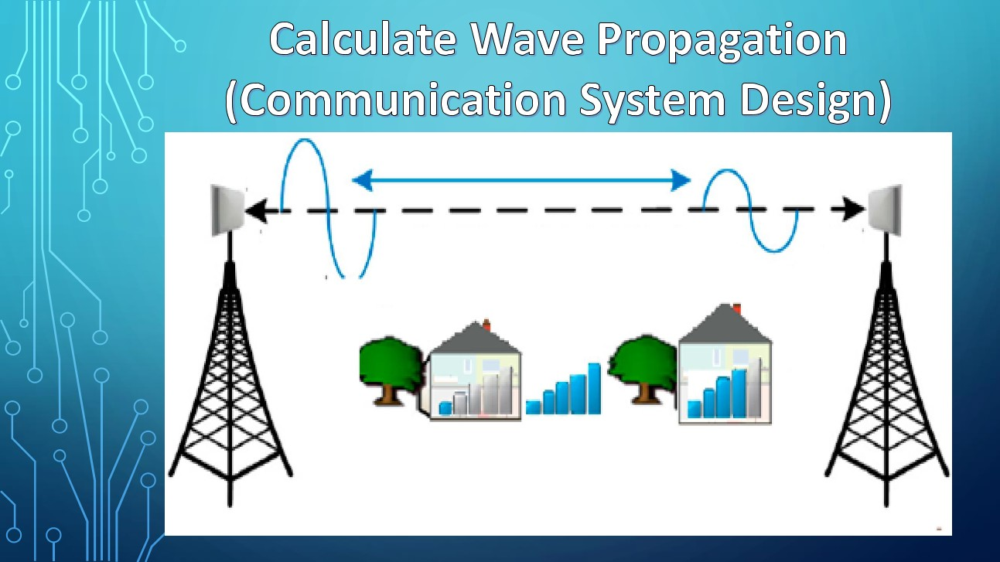
The first Fresnel radius varies along the path. With wavelength λ and distances d1 and d2 from the inspected point to the endpoints, r1 = sqrt(λ d1 d2 / (d1 + d2)), using metres consistently. The maximum radius occurs at the midpoint for a level path, but the critical clearance point can lie elsewhere where terrain or an obstacle rises.
λ = c / f
r1 = sqrt(λ × d1 × d2 / (d1 + d2))
LOS(x) = Ht + (Hr − Ht) × x / D
Earth bulge(x) ≈ x × (D − x) / (2 × k × RE)
Clearance = LOS − terrain − obstacle − Earth bulge
All lengths use metres and frequency uses Hz. A 60% first-zone clearance is an initial planning target, subject to the path, refraction and availability assumptions; it is not a guarantee of link performance. ITU-R P.530 considers climate, effective Earth radius, diffraction and availability requirements when specifying clearance. Avoid applying the curvature correction twice.
A complete review combines endpoint elevations and antenna heights with a terrain profile, obstacle heights and the selected refraction assumptions. Straight-line visibility alone can conceal Fresnel obstruction. Any recommended mast height must identify its survey inputs; the available material does not support a site-specific height recommendation.

| Review area | Method | Evidence to inspect |
|---|---|---|
| Midpoint check | Evaluate equal endpoint distances | Maximum r1 for the same unobstructed path |
| Frequency scaling | Increase frequency by a factor of four | Radius becomes half |
| Off-centre obstacle | Evaluate its actual d1 and d2 | Local radius used, not midpoint radius |
| Site acceptance | Review terrain and effective-radius assumptions | Documented profile and applicable clearance criterion |
3 · RF link budget and propagation analysis
The VB.NET engineering calculator addresses path loss, receiver sensitivity, thermal noise and link-budget calculations. A walkthrough must expose input units and assumptions as well as the output, so a reviewer can recompute a result without access to the original source code.
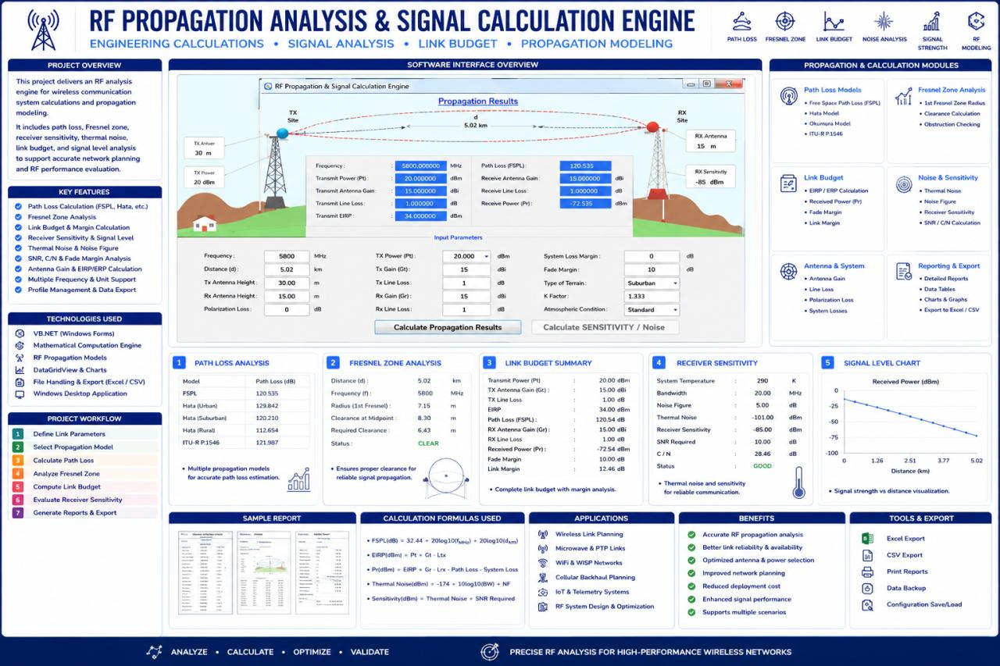
The interface takes frequency, distance, antenna heights, transmit power, antenna gains, cable and polarisation losses, system margin, terrain and the effective-Earth factor, and groups results into path loss, Fresnel clearance, link budget, receiver sensitivity and a received-power chart.
FSPL (dB) = 32.44 + 20 log10(f in MHz) + 20 log10(d in km)
EIRP (dBm) = Pt + Gt − Lt
Pr (dBm) = Pt + Gt + Gr − Lt − Lr − Lpath − Lother
Available margin (dB) = Pr − receiver sensitivity
Noise at ~290 K (dBm) ≈ −174 + 10 log10(B in Hz) + NF
Gains are dBi; losses and margins are dB; absolute powers and sensitivity are dBm. Free-space path loss is only one part of the propagation model: obstacles, diffraction, atmospheric effects and interference can change a field link, so a positive calculated margin is not a recorded availability or throughput result. The receiver threshold depends on bandwidth, modulation and required quality, so datasheet sensitivity is kept distinct from a sensitivity calculated from noise and required SNR.
Recalculation of the displayed example
For 5800 MHz and 5.02 km, with 20 dBm transmit power, 15 dBi gain at each end and 1 dB cable loss at each end, assuming free-space propagation and no other losses:
| Quantity | Poster | Recalculated |
|---|---|---|
| EIRP | 34 dBm | 34 dBm |
| FSPL | 120.535 dB | 121.72 dB |
| Received power | −72.535 dBm | −73.72 dBm |
| Margin above −85 dBm sensitivity | About 12.46 dB | 11.28 dB |
| Remainder after 10 dB target | Not separately defined | 1.28 dB |
The displayed received power agrees with the displayed loss, but that loss does not agree with the visible frequency and distance. This is a discrepancy in the poster; without application source it does not identify the cause or prove a software defect. The original image is preserved as source evidence. At 20 MHz bandwidth and 5 dB noise figure, equivalent receiver noise is approximately −95.99 dBm; the poster’s roughly −101 dBm corresponds to thermal noise before adding noise figure, so the two quantities are labelled separately.
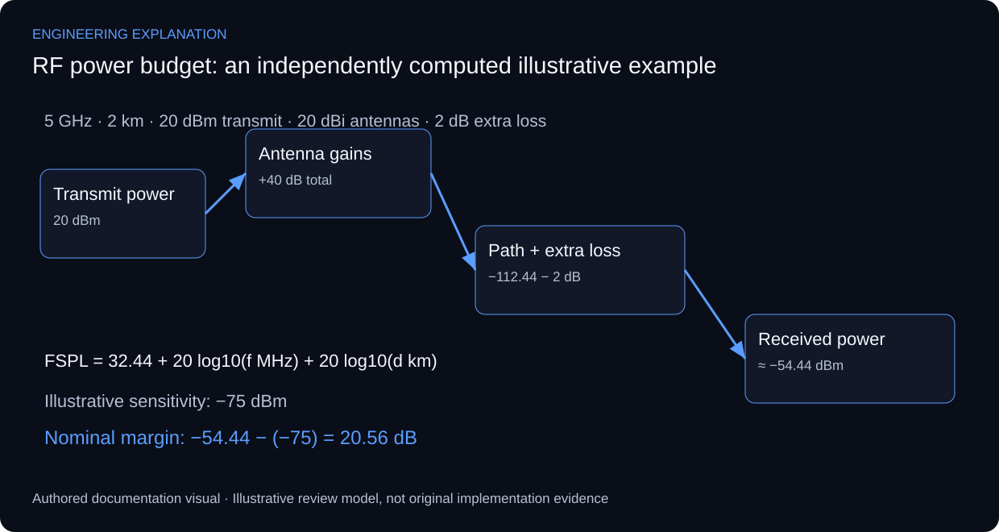
| Review area | Method | Evidence to inspect |
|---|---|---|
| Unit conversion | Enter equivalent GHz and MHz representations | Same FSPL after explicit conversion |
| Distance scaling | Double distance in free space | FSPL increases by about 6.02 dB |
| Additional loss | Add 3 dB cable loss | Received power and margin drop by 3 dB |
| Invalid input | Zero or negative frequency or distance | Reject before logarithmic calculation |
Putting it together: one link, three checks
The same illustrative path is carried through all three stages to show how the checks combine into a decision. The values are independently computed example inputs, not recovered deployment parameters.
| Stage | Calculation | Result | Reading |
|---|---|---|---|
| Path clearance | λ ≈ 0.060 m; r1 at midpoint | ≈ 5.48 m (60% ≈ 3.29 m) | Terrain and obstacles must stay below the line of sight by at least the clearance target |
| Path loss | 32.44 + 20 log10(5000) + 20 log10(2) | ≈ 112.44 dB | Free-space loss only; other losses added separately |
| Received power | 20 dBm + 20 dBi + 20 dBi − 2 dB − 112.44 dB | ≈ −54.44 dBm | Nominal level at the receiver input |
| Margin | −54.44 dBm − (−75 dBm sensitivity) | ≈ 20.56 dB | Compared with the required fade margin, not treated as availability |
A passing link budget does not remove a clearance deficit, and a clear path does not prove margin. The decision record therefore lists all three results with their assumptions, then hands over to alignment and field validation, where measured values are recorded separately from these predictions.
Historical implementation; the RF calculations shown are a subsequent engineering review, not commissioning measurements. The original implementation and the later review are separate evidence categories.
Atma to Al-Sharq engineering case
Project evidence and current analysis
The implemented network links Atma to Al-Sharq through the MTN tower area. This engineering review joins source requirements, authentic simulation captures, reproducible RF calculations and a commissioning evidence plan.
The reviewed 5.8 GHz capability case predicts 19.93 dB and 29.45 dB margin at MCS15. These margins support further validation; permitted EIRP, interference and near-site obstructions can change the result. No measured RSSI, payload throughput or availability has been supplied.
Download the engineering report (PDF) · Open the calculation explorer · Read the engineering audit
Source requirements and engineering inputs
The original requirements specify 8.5 km and 16.5 km. The retained terrain profiles yield 8.277 km and 15.556 km, while UISP displays 8.31 km and 15.64 km. Keep all three distance bases labelled; confirm actual mounting points before adopting a final path length.
The historical budget lists one link on each hop: PowerBeam M5 400 ($180) and a 34 dBi RocketDish link ($1,200). A link requires both endpoints; the second hop also requires compatible Rocket radios. Exact procurement quantities must be reconciled.
| Input | Basis |
|---|---|
| 7 distribution zones | 1, 4, 6, 10, 12, 13, 14; planned range 500 m |
| 61 terrain samples per hop | Existing Copernicus GLO-90 profile through Open-Meteo |
| Profile sample spacing | About 138 m on H1 and 259 m on H2 |
| Reviewed radio calculation | 5.8 GHz; 20 MHz; 800 ns guard interval |
| Clearance scenario | 6 m antennas; k = 4/3; 5 m clutter |
| Observed operating data | Not supplied |
View the original requirements document
Actual UISP simulation results
The two result images below were captured from Ubiquiti UISP Design Center on 12 October 2026. Guest mode, manual product selection, Noise Free, 20 MHz and 6 m antenna heights were used. These are actual tool outputs, not recreated interface illustrations.
UISP reports that LIDAR data is unavailable in this area. Its frequency and loss assumptions differ from the independent 5.8 GHz calculation. The displayed 84.5 Mbps is vendor-predicted capacity, not an iperf measurement or a guaranteed end-to-end service rate.
| Vendor run input / prediction | H1 | H2 |
|---|---|---|
| Product | PowerBeam M5 400 pair | Rocket M5 + RD-5G34 pair |
| Distance | 8.31 km | 15.64 km |
| Frequency | 5,000 MHz | 5,500 MHz |
| TX / gain | 26 dBm / 25 dBi | 27 dBm / 34 dBi |
| Height / width | 6 m / 20 MHz | 6 m / 20 MHz |
| Expected signal | -49 dBm | -36 dBm |
| Displayed capacity | 84.5 Mbps | 84.5 Mbps |

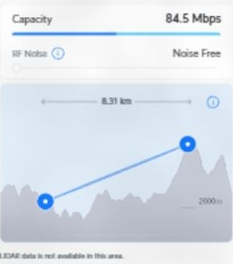

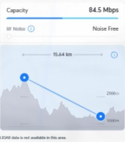
Terrain and Fresnel clearance
The nominal sampled paths clear 60% of the first Fresnel zone. The midpoint first-zone radii are about 10.34 m and 14.18 m at 5.8 GHz. Curvature is applied once, with k = 4/3. Ground elevations are in metres above mean sea level; antenna heights are above local ground.
These profiles do not resolve every tree, rooftop or narrow ridge. A direct survey of the endpoint approaches remains necessary. A zero-height result from a sparse model is not an installation height recommendation.
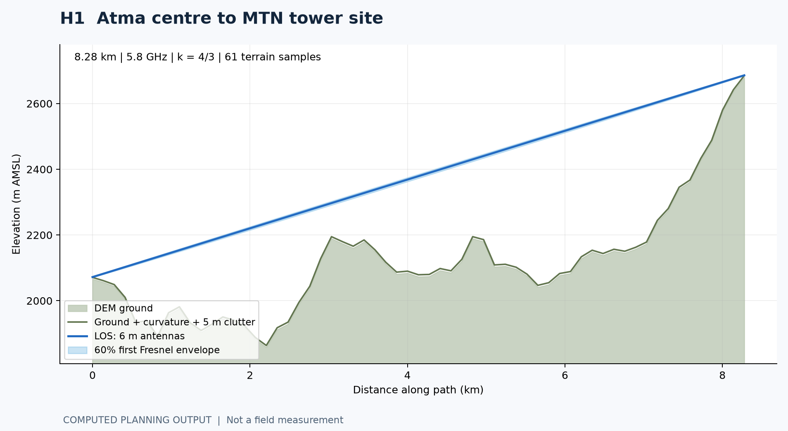
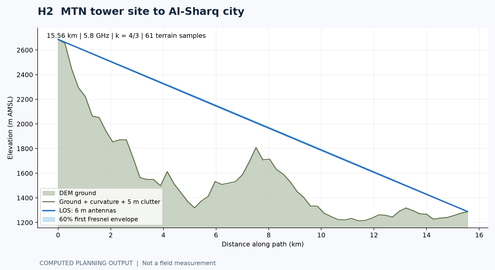
Explore the terrain views
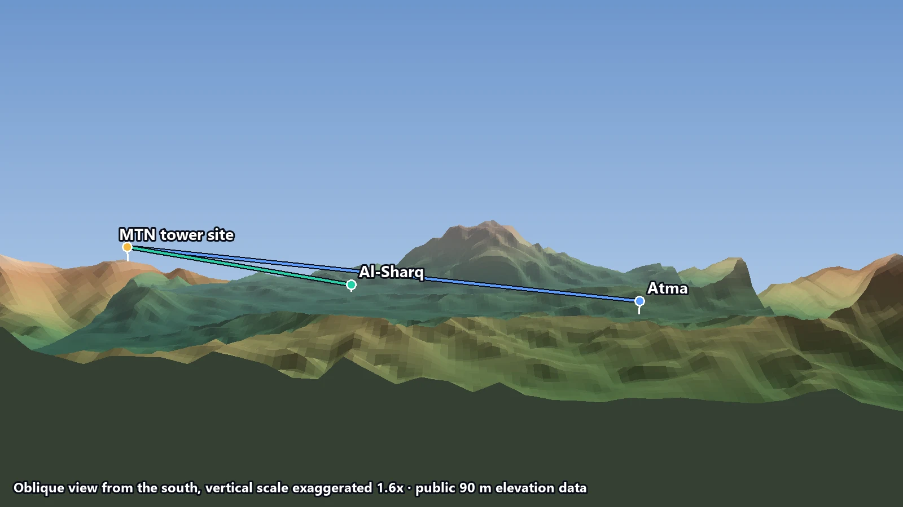
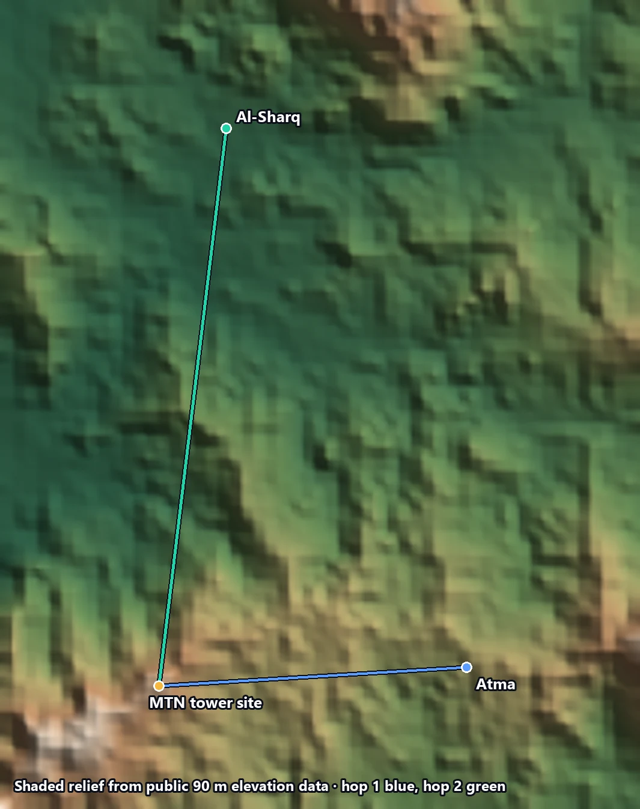
RF budget and MIMO capacity
Each device uses its own manufacturer TX table. MCS0-7 denotes one stream; MCS8-15 denotes two streams. The highest two-stream example is MCS15, 130 Mbps PHY at 20 MHz/800 ns GI. At an assumed 50% payload efficiency, 65 Mbps is an illustrative per-hop estimate, shared across subscribers and directions.
The RF equations use dBm for absolute power, dBi for antenna gain and dB for losses. H1 has an integrated antenna and no separately added external RF-feed loss. H2 assumes 0.5 dB feed loss per end. Both include 2 dB other losses.
| Item | H1 PowerBeam | H2 Rocket + dish |
|---|---|---|
| Path length | 8.28 km | 15.56 km |
| Frequency / channel | 5.8 GHz / 20 MHz | 5.8 GHz / 20 MHz |
| MCS15 TX / gain | 23 dBm / 25 dBi | 21 dBm / 34 dBi |
| RF feed / other loss | 0 dB per end / 2 dB | 0.5 dB per end / 2 dB |
| FSPL | 126.07 dB | 131.55 dB |
| Predicted MCS15 RSSI | -55.07 dBm | -45.55 dBm |
| Sensitivity / margin | -75 dBm / 19.93 dB | -75 dBm / 29.45 dB |
| After TX/RX 4 dB tolerance | 15.93 dB | 25.45 dB |
| PHY / illustrative payload | 130 / 65 Mbps | 130 / 65 Mbps |
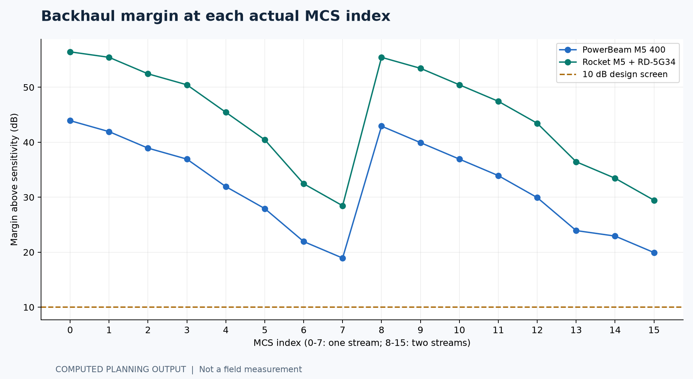
EIRP and uncertainty change the decision
Hardware maximum TX power is a capability input, not a permitted operating setting. The illustrative EIRP sweep shows how lower radiated power changes top-rate margin. It does not assert any legal EIRP limit for Yemen. Confirm the applicable band, channel, country profile and radiated-power limit.
For a 36 dBm illustrative EIRP cap, the MCS15 margins fall to 7.93 dB on H1 and 10.95 dB on H2. H1 then falls below the 10 dB screen at MCS15 and requires a lower modulation rate. Device TX and receiver sensitivity tolerances alone may consume another 4 dB.
| Unmodelled factor | Required evidence |
|---|---|
| Interference / co-site coupling | Spectrum scan and simultaneous-link test |
| Alignment and chain imbalance | Per-chain readings and mounting inspection |
| Actual legal setting | Applicable limits and configuration export |
| Annual availability | Valid model domain, local climate and operational outage records |
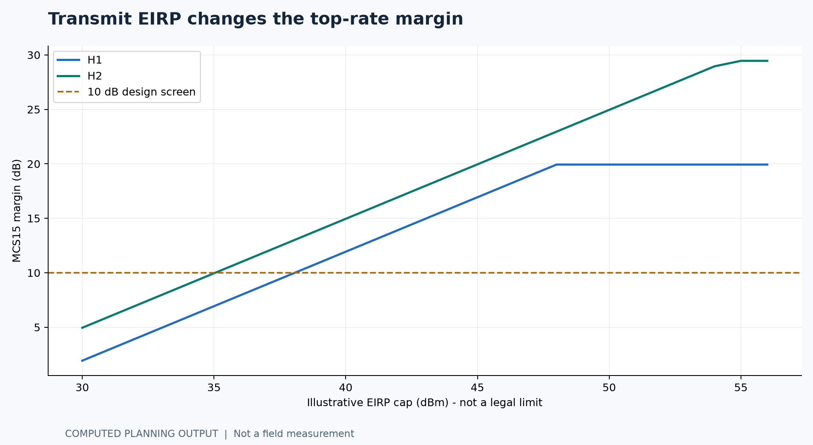
Mast-height sensitivity and design boundaries
The Monte Carlo screen varies assumed DEM error, clutter up to 15 m and effective Earth factor in 5,000 scenarios per height. A scenario pass fraction is not uptime, a measured obstruction probability or a confidence level. Endpoint elevation error is fixed and terrain between samples is unresolved.
Increasing H2 mast height improves this sampled-point screen, but neither 10 m nor 15 m is a certified height. Surveyed clearance, safe access, foundation/mast structure, wind loading and permissions determine the final installation.
The legacy annual rain/multipath outage figures are withdrawn from current conclusions: local climate, propagation-model applicability and annual versus worst-month time basis were not established.
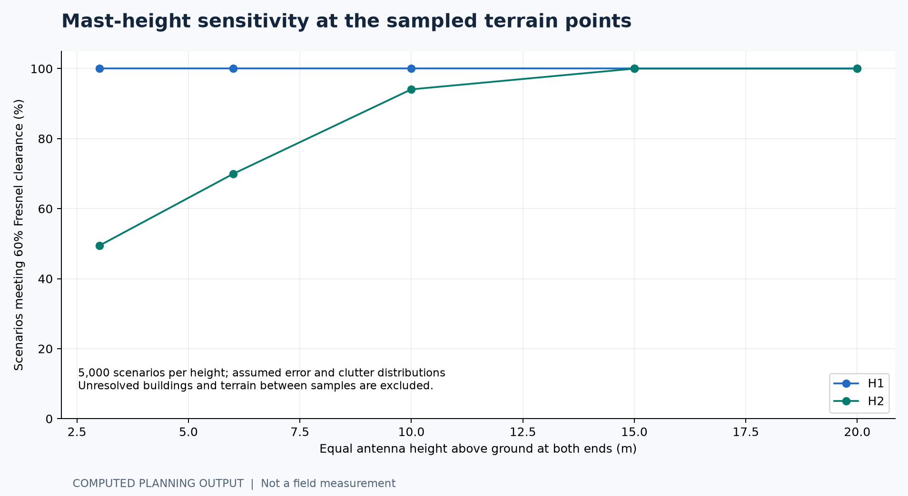
Seven-zone distribution and client coverage
The original map identifies seven retained zones. The equipment totals are 16 NanoStation M2 units, six local PowerBeam units and one sector line. A NanoStation has a directional antenna; a nominal 500 m reach is not omnidirectional coverage or a guaranteed high-rate boundary.
The 5 GHz sector and 2.4 GHz NanoStation operate in different bands and cannot directly associate over RF. Confirm the sector radio, its exact SKU and any Ethernet interconnection. Coverage below assumes on-axis 11 dBi antennas at both ends, an n = 3.2 path-loss exponent and 8 dB shadowing; none is fitted to local measured coverage.
| Zone | Source equipment | Source line total |
|---|---|---|
| 1 | 2 NSM2 + one M5 sector (15 dBi / 120 deg as written) | $430 |
| 4 / 6 / 12 / 14 | Each: one PowerBeam + 2 NSM2 | $250 each |
| 10 / 13 | Each: one PowerBeam + 3 NSM2 | $330 each |
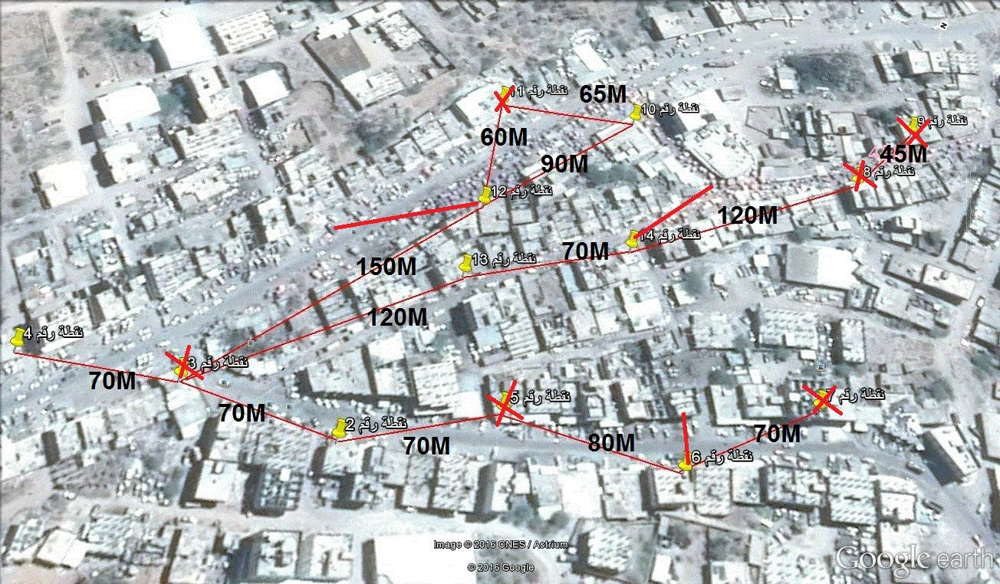
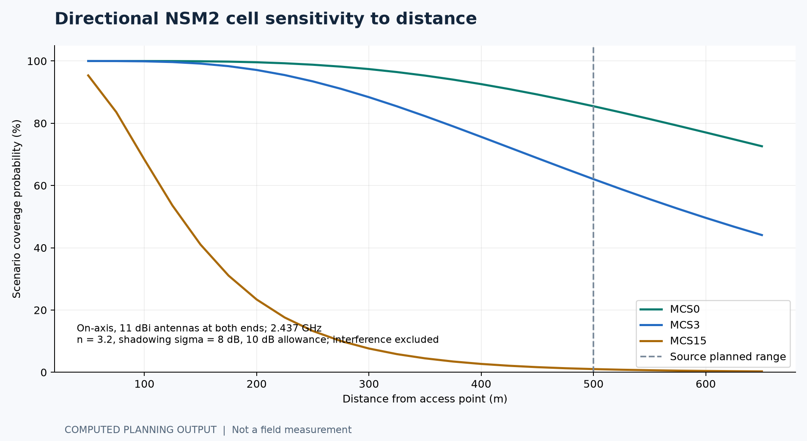
Equipment reference imagery
These are authentic manufacturer product-family illustrations reproduced from official Ubiquiti datasheets. They identify the hardware families and are not photographs of the installed sites. Exact SKU identification still requires an inventory or device label.
PowerBeam PBE-M5-400: 25 dBi integrated antenna. RocketDish RD-5G34: 34 dBi antenna with approximately 3 degree beamwidth, requiring a compatible radio. NanoStation M2: directional 2.4 GHz MIMO device.

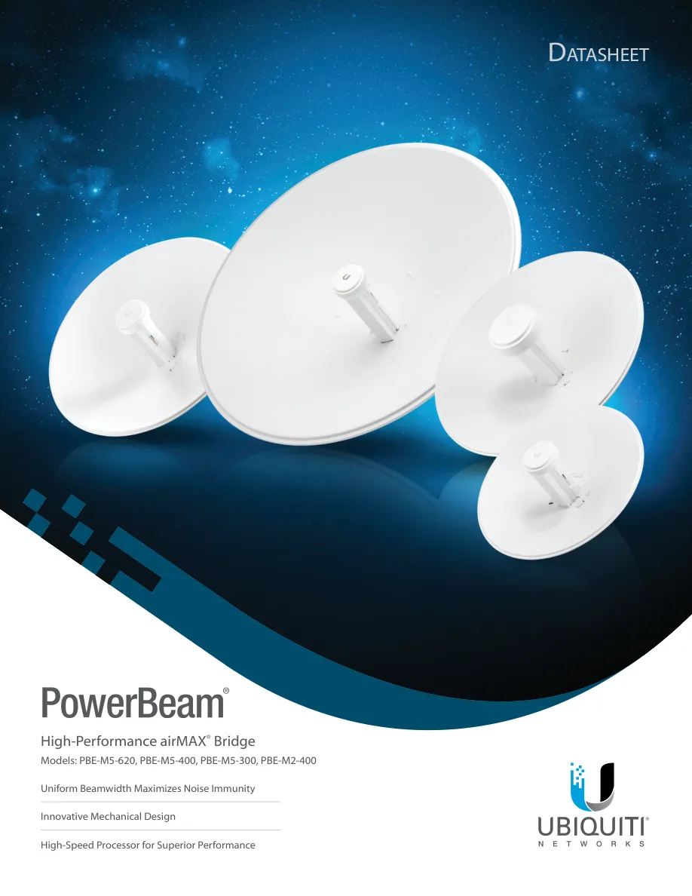

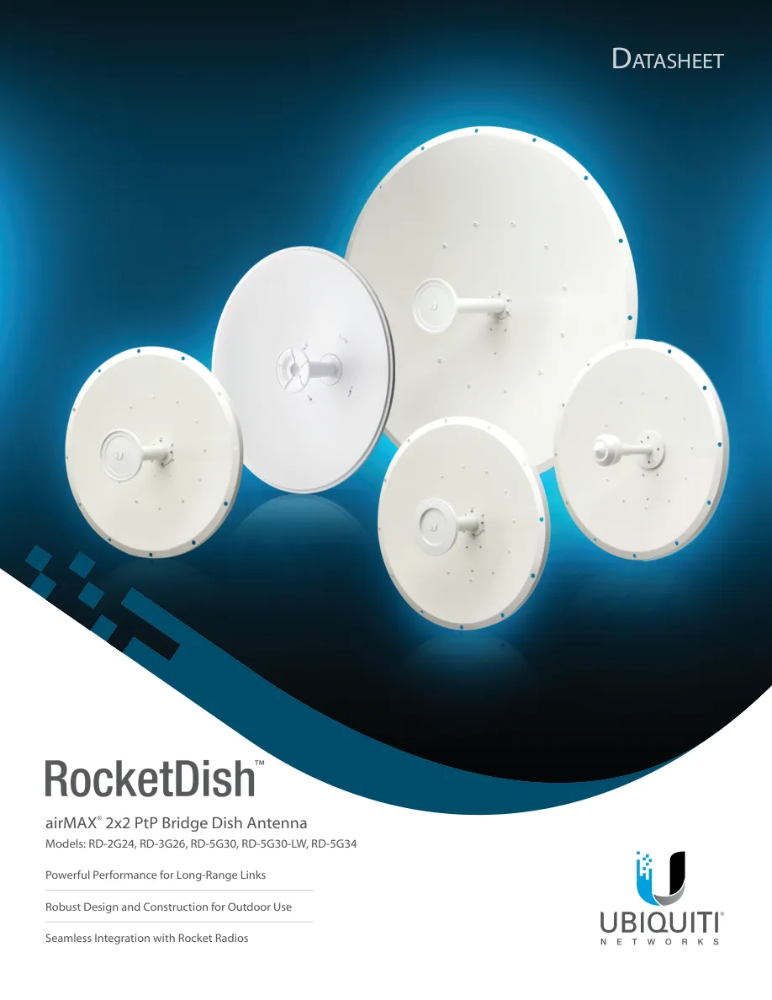

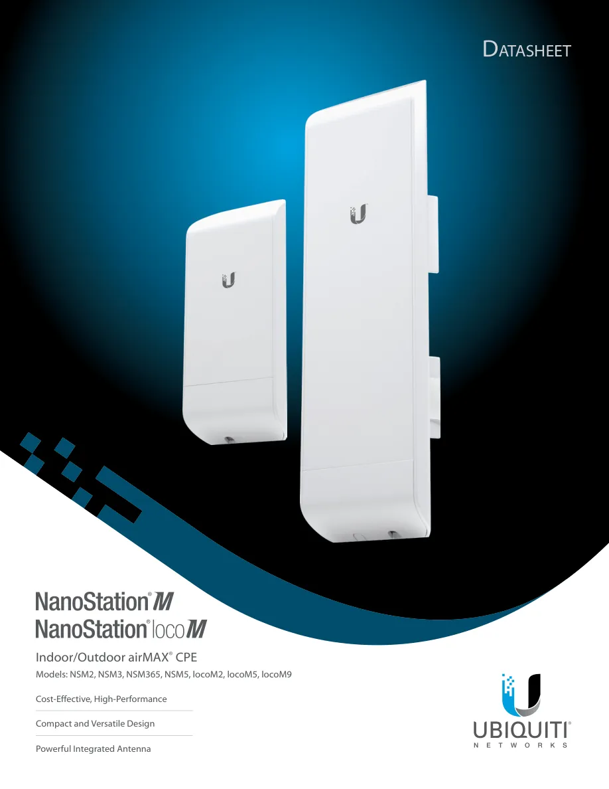
The existing VB.NET RF and Fresnel project posters remain available on the website. They are source document previews; the new calculation plots and UISP captures are separately labelled. No new VB.NET execution or field configuration screenshot is claimed.
Network operation and relay-site power
Separate management, backhaul and subscriber traffic. Record the actual router configuration and Internet-line health checks. For co-located MIMO radios, keep both polarisation chains matched; determine channel and physical separation through spectrum and desensitisation measurements rather than a fixed universal spacing.
The remote relay load is assumed as two 8 W radio allowances plus 10% conversion/cable overhead: 17.6 W, or 422.4 Wh/day. Actual injector/DC conversion and auxiliary consumption must be measured.
| Component / input | Scenario sizing |
|---|---|
| Solar resource / system efficiency | 4.5 peak sun hours / 70% (assumptions) |
| PV with 1.5 design multiplier | 201 W, rounded scenario about 200 W |
| 3-day LiFePO4 bank at 12 V | 155 Ah; 80% usable depth; 85% efficiency |
| 3-day lead-acid bank at 12 V | 248 Ah; 50% usable depth; 85% efficiency |
| Controller calculation | About 21 A at recommended PV; select by voltage/current ratings |
| PoE feed | Regulated compatible 24 V passive PoE from 12 V bank |
| Excluded loads | Routers, switches, monitoring and future expansion |
A system near 200 W is the mathematical scenario, not a verified winter design. Check minimum-month insolation, recharge after prolonged low sun, temperature derating, battery condition and all loads. Grounding, surge protection, weatherproofing and structural work require site inspection.
Historical source subtotal: backhaul $1,380 + zone equipment $2,090 + two core routers $420 = $3,890. Cable, modems, accessories, uncertain currency lines, missing radio quantities and solar items prevent a complete present-day project total.
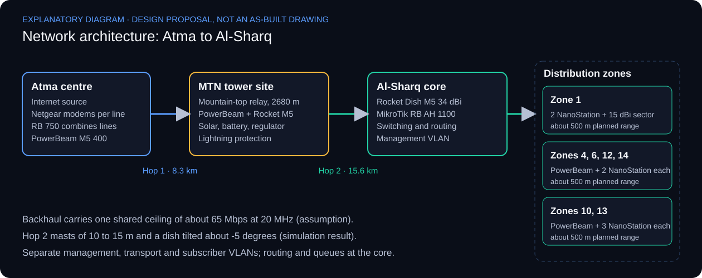
Engineering audit and remaining evidence
The review corrects the following issues while preserving the project implemented status and the original documentation. The full audit in the repository records completion evidence for each remaining item.
| Review area | Previous issue | Current treatment |
|---|---|---|
| Radio table | PowerBeam previously approximated from Rocket TX power | Use actual device-specific MCS0-15 tables |
| MIMO rate | MCS0-7 rate doubled without two-stream sensitivity | Explicit MCS8-15; MCS15 is 130 Mbps PHY |
| Annual outage | Unverified climate and probability time basis | Withdraw annual-minute claims pending valid inputs |
| Co-site isolation | Fixed spacing and blanket cross-polarisation | Preserve both MIMO chains; measure desensitisation |
| Power/EIRP | Maximum TX treated as initial operating setting | Verify permitted EIRP; use sensitivity scenarios |
| Mast height | Coarse DEM used for firm height advice | Treat 6/10/15 m as scenarios; survey and structural review |
| Distribution | 2.4 GHz and 5 GHz roles insufficiently defined | Confirm radio pairs, Ethernet interconnect and sector SKU |
| Solar feed | 12 V bank did not show the 24 V PoE conversion | Include regulated compatible 24 V passive PoE |
| Budget | Subtotal presented close to a complete project cost | Label historical subtotal; identify unpriced/uncertain items |
The main remaining evidence is site photographs, surveyed antenna positions/heights, device inventory, actual settings, per-chain signal/noise, channel scans, traffic tests and power/uptime logs. Product-family images and planning screenshots cannot substitute for those records.
Field acceptance record and references
Use this evidence register during verification of the installed system. Agree service throughput, latency, packet loss and availability targets with the operator before applying pass/fail decisions. A seven-day log is an initial stability screen, not annual availability proof.
| Check | Record required | Evidence | Public status |
|---|---|---|---|
| Survey | Mounting point, AMSL/AGL heights, obstacles and endpoint approaches | Survey drawing / photos | Not supplied |
| RF settings | Actual SKU, firmware, frequency, width, TX and country setting | Configuration exports | Not supplied |
| Signal | RSSI each chain, noise, SNR, MCS, CCQ/airMAX quality under load | Timestamped airOS captures | Not supplied |
| Payload | Each hop and end to end, both directions; record load and duration | iperf3 + ping/loss records | Not supplied |
| Co-site | Operate both links together and compare noise/RSSI/rate | Isolation/desensitisation test | Not supplied |
| Coverage | Record AP/client bearings, heights and zone boundary readings | Zone validation map | Not supplied |
| Power | Measure all loads and test battery autonomy/failover | Power and recovery record | Not supplied |
| Stability | Log rates, signal, resets and interruptions for at least seven days | Monitoring export | Not supplied |
Reproducible calculation, input tables, results and engineering audit
Engineering approach
- Separate coverage, path clearance, link budget and capacity, then combine them in one decision record.
- Expose input units and assumptions with every calculated result so it can be recomputed independently.
- Treat standards such as ITU-R P.530 as design context that does not replace a radio data sheet or site survey.
- Keep predictions, calculator outputs and field measurements clearly distinguished.
The two VB.NET calculators support analysis and are distinct from the Ubiquiti wireless network work, which is documented through the source requirements and planning deliverables.
Verification context
The functional diagrams explain the engineering responsibilities of each part. The original source previews appear above. As-built addressing, configuration exports and raw acceptance records are not included in the public release. The current report adds actual UISP planning captures and computed plots. Surveyed heights, installation photographs and measured traffic records remain to be supplied.
Detailed verification boundaries and technical source context